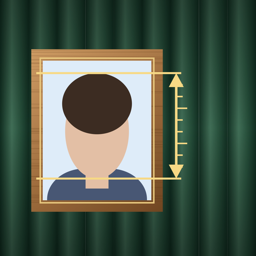

規格の線の証明写真
頭の上の余白と顔の長さを、mm の線で合わせる証明写真。
パスポート・マイナンバーカード・履歴書・運転免許などの証明写真を、手持ちの写真やカメラで作ります。写真の上に、その規格の寸法を mm の線で重ねて見せます。
- 寸法線：「頭の上の余白」と「頭のてっぺんからあごまで」が、いま何 mm かを線で見せます。パスポートは外務省の決まり（頭の上 4±2mm、あごまで 34±2mm）で合わせます
- 外れていると赤くなり、「顔をあと 1.5mm 大きく」のように直し方が出ます。顔を見つけて、はじめから真ん中に合わせます。線は指で直せます
- 背景を白・うすい青・うすい灰に変えられます。顔を見つけるのも切り抜くのも端末の中で、写真を外に送りません
- L判（89×127mm）に、大きさのちがう写真をまぜて並べます。紙のすみに 10mm のものさしを刷るので、刷ったあと定規で大きさを確かめられます
- 登録・課金はありません。美肌などの加工はしません。画面のいちばん下に小さな広告が出ます（カメラの画面には出ません）